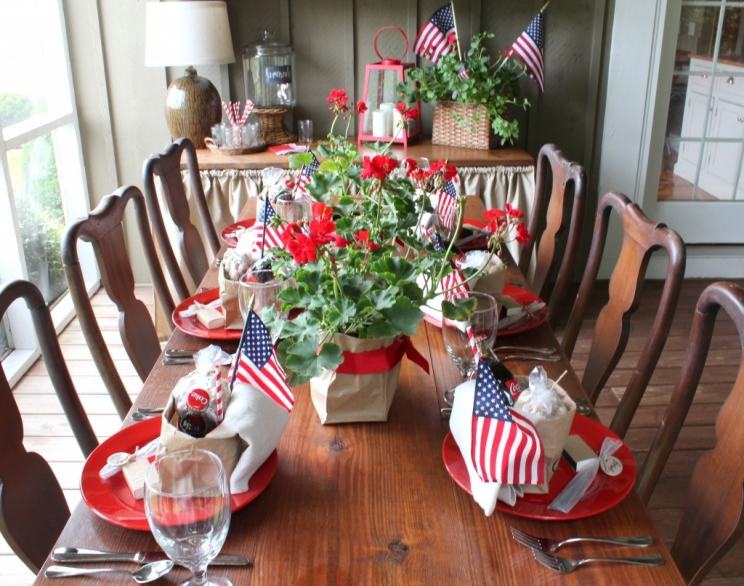
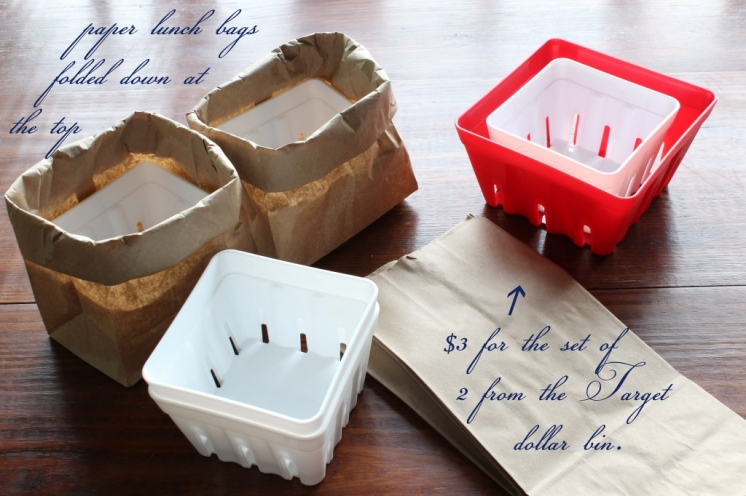

.png)
.PNG)
.PNG)
.PNG)
.PNG)
.PNG)
.JPG)
.JPG)
.PNG)
.PNG)


I was wanting to photograph the places of red, white, and blue around our home this weekend, but it has rained…and rained…and rained. Rain = darkness.. Which means taking interior photos is not a wise idea. So, I’m afraid you will just have to see more of the back porch. It is ready for the 4th of July. (At least the room is ready. The food is not.)

I have made bags for each place setting using some plastic berry boxes inside ordinary lunch bags. The berry boxes themselves could have been used, but they were too short to hold everything. Plus I really like the simple look of the bags. (And the bags alone were not sturdy enough to hold everything inside them without collapsing.) I hand lettered the word Celebrate on each bag.

Inside each rolled down bag is a bottle of Coca-Cola, a red striped straw, a linen napkin, a flag, and a small bag of roasted peanuts. (Everyone can use their bag to put the peanut shells in. 🙂 ) Also on each plate is a small sack of sparklers with a tag that I lettered sparkle on – all tied with twine. And there is a box of matches that has been wrapped in kraft paper.


The centerpieces are simply potted geraniums in more rolled down lunch bags tied with red grosgrain ribbon.

The rest of the room has additional flags to add red, white, and blue touches for the holiday everywhere.

I took the black throw pillows off the sofa for awhile. If I had some blue ones, I would have used them, but since I don’t, I used the neutral khaki ones instead. With all my red, I still think it looks patriotic even without the use of blue.


When I say there are flags everywhere, I do mean everywhere…


I will take the bags back inside and store them in the kitchen until the 4th of July. Then I will put them back out for our dinner. It is nice to have the decorating for the holiday already planned out.

Thanks for coming to visit out on the porch again. 🙂 I wish I could have all of you over for a dinner on the 4th! If the rain will let up, I will try to get some photographs taken inside the house. I don’t remember ever having this many consecutive days of rain in a very long time.


Do you do any special decorating for the 4th of July holiday?
We’d love to hear about it!
Linking up with Marty @ A Stroll Thru Life’s Inspire Me Tuesday


.PNG)
[…] Source […]
Kelly,
I just love your porch and all of your decorations! It is so colorful and inviting – very comfortable and inviting. Love your swing also. I have a large collection of antique wicker also. You are very creative. I enjoy decorating also and may share some pics. I have never done that before so will have to find out how. Thanks for sharing!
————————————————————
Hi Brenda! I am so happy you like the decorated porch. Yes, it is colorful! My love for wicker goes way back to my babysitting days when the doctor for whom I worked had tons of it in his house – including the breakfast room furniture. Then I bought my first piece as a teenager, and it has continued from there. I bet your antique wicker is gorgeous, and I would love to see your photos of it.
Thanks for reading and commenting!
Kelly
I love the khaki pillows. Makes it less ‘in your face’ decorating. Very classy. And WHAT ABOUT all of this rain?!? We got more again today here in east Tennessee. I have TOTALLY given up on trying to dry my hair. It’s a ballcap summer.
Where did you get all the wicker, love the color!
——————————————————————————
Docia, all the wicker is a mix I have collected over the years. The sofa is a Lexington piece. The swing and the chairs came from Pier 1. I can’t remember where the little tables came from. All of it is painted the same color as the exterior – Pelham gray – a Martin Senour paint color.
Glad you liked it all!
Kelly
Love your festive porch!
Love your tablesscape in all of its 4th of July splendor. Thanks for sharing.
Agree, agree! Echoing all the above sweet comments. The porch is just so festive, loving the tablescape, especially. Have a wonderful holiday and I hope the steady rain soon comes to an end. As I’m writing, dusk has settled in on this humid evening. I can hear the noise of firecrackers sporadically going off. The historic carousel at the end of our street is bedecked in patriotic bunting and soon the city fireworks display will light the darkened sky. Ah, July and the Fourth, we are indeed lucky to be Americans!
Your porch looks so amazing. I love all of your festive touches! You have so many great ideas. Love your blog. Excited for your future posts.
Oh, Kelly,
Another Home Run! WOW – can’t find the words to tell you how absolutely incredible your deco for the 4th are. And your lettering … I’m so envious … where did you learn to write so beautifully? Did you take a class? I know if I would attempt to copy your super paper bag idea I would ruin it with my not so great hand writing 🙁
Have a wonderful 4th of July Celebration and I hope your daughter’s mouth has healed well and she’ll be able to enjoy your feast.
Love your porch! Also love the use of paper bags for favors and decorations. My husband always makes ice cream on the 4th. We have decided to be super patriotic this year and use cherries and blueberries in the vanilla ice cream. Our grandchildren enjoy the process and seem amazed that Papa can make ice cream just like you buy at the store…..got to love them.
Your porch decorations are wonderful! And I am so envious of your beautiful lettering skills 🙂 Unfortunately, I don’t think our forecast looks too promising for the 4th. Thank goodness for screened porches.
I just love your porch. A perfect spot to share a meal, visit or just pass the day reading. The festive touches are perfect and I love the use of the brown bags. A great touch!
Hello Kelly!
I just came from visiting Jones Design Company and noticed your comment. I am grateful it led me to your blog. it is beautiful! I just subscribed 🙂
So pretty! When is the lettering tutorial coming?
Your porch looks wonderful….love the colorful touches you added….so many people overdo it. Yours is timeless and perfect!
Kelly,
This is fabulous. What great ideas you’ve shared. I love the contents of the bag at each place setting. So clever. Everything looks so inviting. I’ll save this post for the next 4th of July party we host. I’m headed to Austin to be with our granddaughter and the kids this year.
xo,
Karen
Wonderful 4th decorations! Just love them–so simple yet so homey and so YOU! Thank you for sharing! I use r/w/b bunting “fans” on my white picket fence, decorate my mail box and entrance gate with flag banner-plus wreath and use red geraniums with lots of small flags.
Kelly,
I LOVE this! Can’t wait to start decorating for the Fourth! I love the bag idea. Now, that I have been inspired I have so many ideas I want to do! I’ll be posting them on my blog tomorrow! Thanks for letting me visit and I hope you visit my blog soon!
Happy 4th!!!
Let freedom and good design RING, baby!! Everything is picture perfect, Kelly – and I’m so stealing your geranium idea for my outdoor buffet table this weekend! Thanks (AGAIN!) for inspiring us with simple yet elegant (and affordable) ideas! And feel free to send all that rain to Texas! =)
What a charming tablescape and porch for the 4th!! I hope you have a wonderful celebration!
This is wonderful! I love the small touches around your back porch.
perfection Kelly I just forwarded this post to my daughter and
a couple of friends. It is so charming!
Kelly, I love all of your incredibly creative and patriotic decorations! Your house is so pretty!! Thanks for sharing!
Kelly,
You are so clever!!!! I love your porch and table decorated for July 4TH! The bags with Coke and peanuts, sparklers, and love the paper bags around the geraniums with red ribbon. Thank you for all your ideas and love all you patriotic touches throughout the porch. Wish I was going to be your guest. Happy 4TH!!!
while i’d love to see the outside of your home decorated for the 4th, i’m always happy to see my favorite porch and it never disappoints! i love all your patriotic touches and that tablescape is gorgeous! i don’t have out anything red, white or blue so i might have to get out a few things for the 4th. with me going to PT and still a little “stoved up” with my knee, it just hasn’t been my #1 priority to do anything house related. that’s okay with my husband but not me!
hope you have a great week!
I wish you could have me over for dinner too, that looks so inviting and I am envious of your closed in porch….swoon. Have a wonderful 4th.
Kelly, your porch is gorgeous. I know your family has to look forward to each special occasion to see what beautiful decorations and goodies you have in store for their visit. After seeing the patriotic ambience you have created, I can’t wait to see the menu for the 4th of July. I always look forward to each post. Each post is like finding the ring in a box of Cracker Jacks. Boy, doesn’t that bring back memories.
Hi Kelly, Love your gorgeous porch and all your 4th of July decorating ideas, so creative and beautiful! Your home and blog are one of my absolute favorites, love your style!!!
Wow, what time should we arrive? 😉 It looks like a fun party! Everything is so nicely decorated.
We’ll be spending the 4th at Smith Mountain Lake Virginia in the town of Penn Hook. I may have to use some of your ideas! You are very clever!
Have a wonderful 4th.
Oh I love your porch and all of your decorations, so pretty and so inviting I hope you will link up to my Inspire Me party this afternoon, this is definitely inspiring. Hugs, Marty
Hi Kelly,
I love seeing your porch decorated for the Fourth of July, and I think your use of simple brown bags is charming. Glass Coke bottles are classic and “All-American.” Great ideas!
Please come by and see my Fourth of July decor . . .
http://simplysuzannes.blogspot.com/2013/06/fourth-of-july-inspirations.html
Thanks for sharing!
Suzanne